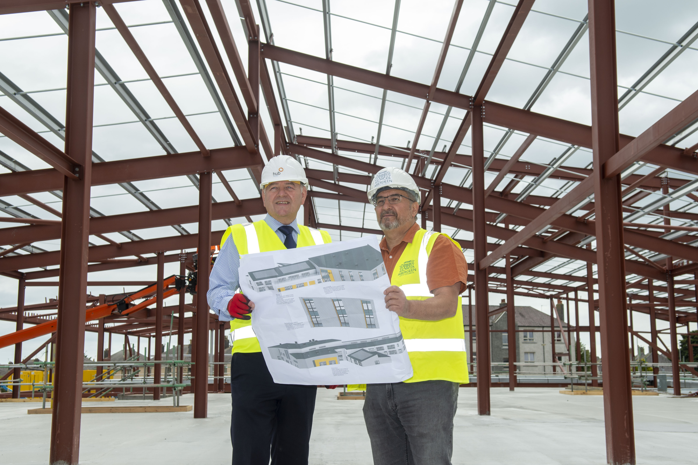

Councillor hails progress on new Torry School and Community Hub
Aberdeen’s new Convener of the Council’s Capital Programme Committee today (Thursday 14 July) visited the site of the forthcoming Torry School and Community Hub to see progress on the new development.
Convener Councillor Christian Allard saw at first-hand the structure taking shape following the commencement of construction work last month at the site of the former Torry Academy.
The building is scheduled for completion by autumn 2023 and will be home to a new primary school including an Early Learning and Childcare (ELC) centre as well as a Community Hub.
Councillor Allard said: “I was delighted to come along to see progress on a site which will become a real focus of the Torry community; providing first-class facilities for young and old alike including a 434 capacity school and a provision for 100 ELC pupils who will be able to enjoy outdoor playing facilities on-site.
“With a community café, a library, rehearsal, performance and recording facilities, multi-purpose rooms including office space for services and a 3G seven-a-side pitch, there will be something for everyone in a Hub that the entire Torry community can be proud of.”
“The input of the community into the project via the locality Tory Partnership has been crucial in making the site a reality and I greatly look forward to seeing the school and hub open to the people of Torry next year.”
Peter Ramsay, operations director for hub North Scotland, who are the council’s development partner in the project, said: “Our Torry project has got off to a good strong start and we are looking forward to working with both Aberdeen City Council and Morrison Construction to deliver an asset that will be enjoyed by the whole community for generations to come.”
Mike Bruce, Managing Director of Morrison Construction Building North East, said: “We are excited to be delivering this high-quality new school for the community that will create an inspirational learning environment for local children.
“With our project at Countesswells also progressing well it reinforces our established approach of working with our local supply chain partners and our own tradesmen and apprentices ensuring our exacting quality standards are met on site.“